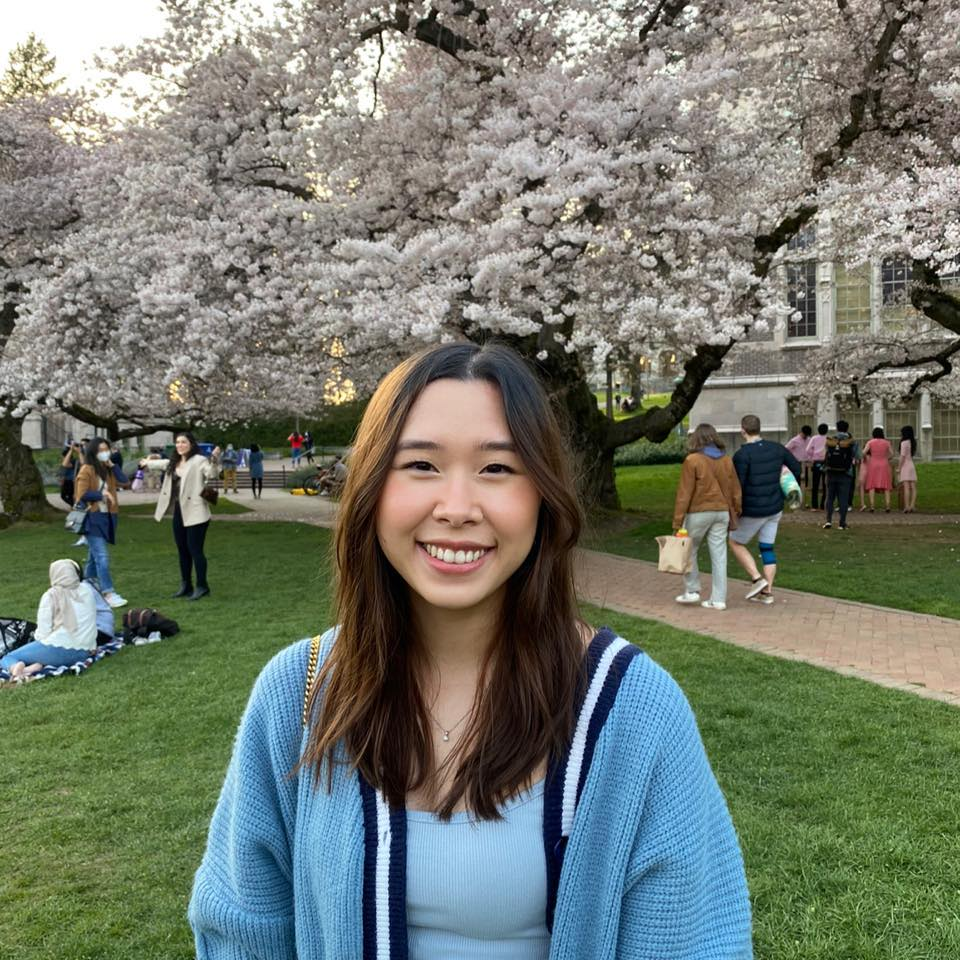

About Me
I am a Vietnamese first generation college student at the University of Washington in Seattle going into my third
year studying computer science. At the university, I am involved with the STARS engineering program as a member of cohort V
where I have cultivated a strong sense of belonging & support within this big university and built a strong foundation and understanding of my own learning process.
This spring, I will be joining Microsoft as a Software Engineer intern on the DevDiv team where I will have my first experience dabbling
in large systems and learning to ship quality code. In the summer I will be returning to Facebook
where I will continue to grow as an aspiring software engineer. ☻
P r o j e c t s
Corgi Adventure
Corgi Adventure is a cute game I made with Scratch. Although it
was originally an assignment that was categorized as "for fun" in my high school calculus
class, I took this assignment pretty seriously and took the initiative to
try to make this game reminiscent of the types of games I played as a child.
When I was younger I played a lot of video games like Pokemon and Kirby.
I really wanted my game to reflect these games' cute and innocent aesthetic yet
slightly challenging gameplay. With Corgi Adventure, I believe I have
achieved that. It screams all the attributes of my childhood with my
older self's ambitions of pursuing computer science and engineering. This
game, although it may not be a very technical project, is therefore
very sentimental to me in that it
portrays a significant part of my life as I begin my journey in computer science.
[Click for Project Details]
HERD Online
HERD is a my very first group project. It is a web application I made
with my teammates during my time at
Google's Computer Science Summer Institute (CSSI). Have you ever wanted
to go eat out, but didn't want to have to wait for anything more
than 5 minutes to get seated?
Time is especially limited as a college student. With classes, studying, and
extracurricular activities,
I definitely don't want to spend time waiting in line to get food.
We envisioned HERD to help with that. HERD allows the user to see how
many others are in a certain location so that they can account for traffic
and effectively manage their time. This was the idea of HERD.
Although we were not able to complete our vision for HERD due to the
time constraint of a week that we were given. We were able to produce
a MVP of storing user location and alerting users how many HERDERS or users
were in their area.
[Click for Project Details]
HelpQ
HelpQ is an android app I made with my teammates during my Facebook University for
Engineering (FBU) internship in the summer of 2019. During the first three weeks
of the internship, interns go through a mobile development (either android or iOS) bootcamp with
CodePath. During the bootcamp, my teammates
(Cassandra Cabrera
&
Julie Kallini)
and I were frustrated with the communication system
between admininstrators and interns in order to get help. The means of communication was essentially
a Google Docs acting as a queue; you could imagine the frustration. We therefore made HelpQ to revamp the
CodePath training that FBU Engineering interns experience during the first three weeks of their internships
by facilitating smoother communication between interns and administrators.
[Click for Project Details]
R e s u m e
Loni Tra
425-737-0304 • lonitra@uw.edu • linkedin.com/in/lonitra • github.com/lonitra
___________________________________________________________________________________________________________________________________________
Education:
University of Washington, Seattle, WA
Bachelor of Science in Computer Science Expected: March 2022
o Washington State Academic Redshirt (STARS) Scholar
o Member of highly competitive engineering enrichment program for Washington state students from underserved high schools
o Relevant Coursework: Computer Programming I & II, Software Design & Implementation, Data Structures & Parallelism, Interaction Programming
Mariner High School, Everett, WA June 2017
o Relevant Coursework: Introduction to Programming
___________________________________________________________________________________________________________________________________________
Technical Skills:
o Languages: Java (proficient), C# (familiar), Python (familiar), JavaScript (familiar), HTML/CSS (familiar)
___________________________________________________________________________________________________________________________________________
Technical Experience:
Software Engineer Intern, Microsoft April 2020 – Present
o Leverage teammates in learning and adapting to team operations and codebase under remote circumstances
o Responsible for implementing and shipping new property onto an existing Windows Forms control
Facebook University for Engineering Intern, Facebook June 2019 – August 2019
o Participated in Android mobile development training building four different apps in three weeks, including apps like Twitter and Instagram
o Built own app from scratch in a team of three using Java, Parse, and Android Studio
o Designed features and UI flow that would best resolve Facebook University training communication issues the app aimed to solve
Computer Science Summer Institute, Google July 2017 – August 2017
o Selected to participate in an intensive programming institute learning web app
development in HTML, CSS, JavaScript, Python and Google AppEngine from Google engineers
o Utilized Python and Datastore to store and pull data for the creation of a web application
o Collaborated with colleagues in order to produce a minimum viable product under a given time constraint
___________________________________________________________________________________________________________________________________________
Projects:
HelpQ
An Android app that revamps the CodePath training that FBU Engineering interns experience by facilitating smoother communication between students and administrators.
o Implemented multiple core and stretch features within the app using Java
o Designed & updated UI to improve overall UX
o Conducted tests to ensure stability of app for presentation and client use
HERD
HERD is a web application I made with two other colleagues as a final project for CSSI with a time constraint of a week. HERD offers a visual and a count of people in an area so that traffic can be accounted to manage time effectively.
o Utilized Python and Datastore to store and pull user unique ID and location
o Designed and implemented count feature
o Collaborated with front-end to improve UI
Corgi Adventure
Corgi Adventure is a game I made on scratch.mit.edu for the entertainment of others.
o Designed UI of the game
o Tested game with myself and multiple users for bugs and feedback to improve UX
o Implemented additional game features to improve UX
___________________________________________________________________________________________________________________________________________
Additional Experience:
CSE 190Z Teaching Assistant, Paul G. Allen School of Computer Science September 2019 – March 2020
o Facilitated weekly office hour and 1-1s to aid students in understanding basic programming concepts
o Reviewed and critiqued lesson plans and assignments to achieve an effective intro CSE curriculum
o Evaluated student work to provide constructive feedback for improvement in student understanding
Engineering Peer Educator, University of Washington College of Engineering April 2018 – December 2018
o Collaborated with three other peers to develop an entire quarter’s worth of curriculum and activities that would best aid incoming freshmen
o Communicated with Engineering Peer Educator leads for clarification and progress updates
o Facilitated a classroom of 20 students in studying engineering and its interdisciplinary nature
[Click for PDF Version]
P h o t o s

Last day of CSSI. So glad to have worked with these amazing people!
|

STARS Cohort V family photo
|

Google Games 2018. We won these cool new backpacks for placing 3rd!
|
STARS celebration for finishing our first year in college together
|
An amazing man I was lucky enough to have as a teacher. "What works is work" -Dave Prince
|
Excited to be an FBU intern! Especially after all the swag I got :)
|
My amazing teammates Julie Kallini & Cassandra Cabrera and my awesome managers Seong Wan Song & Hunter Monk. Really couldn't have asked for a better team!
|

An amazing first internship experience, until next summer Facebook!
|